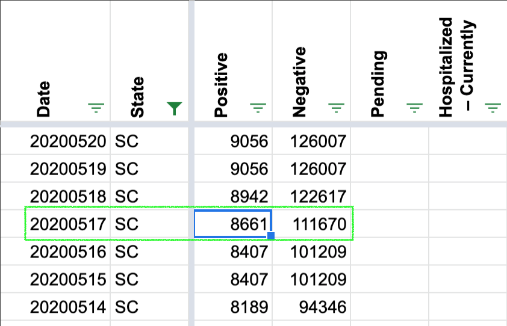
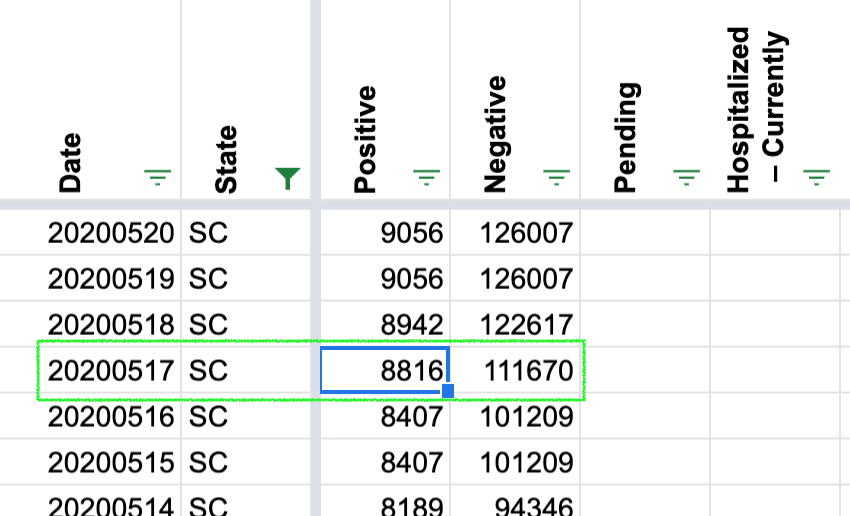

May 17 positive cases total for South Carolina
State South Carolina
Describe the problem The Sunday, May 17 case total is off in the data API. The May 17 SC Health Dept. press release shows 8,816 cases as of May 17. But the CTP historical data shows 8,661 for that date. Possible to get that fixed? (The last screenshot is correct. Looks like the feed still includes the screenshot from earlier in the day).
SC Health Dept. data source: https://www.scdhec.gov/news-releases/south-carolina-announces-latest-covid-19-update-may-17-2020
TCP SC data https://www.scdhec.gov/news-releases/south-carolina-announces-latest-covid-19-update-may-17-2020
Thanks!
chriscanipe added the label Data quality on May 28, 2020 at 8:34 am
camille-le closed the issue on May 29, 2020 at 6:40 am
Hi Chris, thanks for your input. On 5/17, South Carolina updated total positive cases from 8661 to 8816 after we published.
We are going to update the 5/17 data based on the South Carolina 5/17 evening screenshot. You should see the correct data reflected on the site shortly.
BEFORE: 
AFTER: 
Thank you, Camille